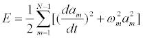
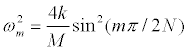

At any given time, the displacement of the i-th particle yi at location xi on a lattice with fixed ends can be written as a sum of modes ϕm(x).
The expansion (Fourier) coefficients ak are related to the displacements yi by
It easy to compute either {yi} from {ai} or {ai} from {yi}. Both sets of numbers contain the same information and either can be used to describe the state of the oscillator chain.
The total mechanical energy of a system is the sum of the potential and kinetic energies of the system's particles. For a simple one-dimensional Hooke's Law model with spring constant k, the kinetic energy of the i-th particle is Ki= (1/2)Mvi2 and potential energy of each spring is Ui= (1/2) kΔyi2. The total energy E = U + K for a lattice of N molecules is the sum of these energies.
This total energy can also be expressed in terms of the energy in each mode using the expansion coefficients ak and their derivatives dak/dt

where ωm is again the normal mode angular frequency
 .